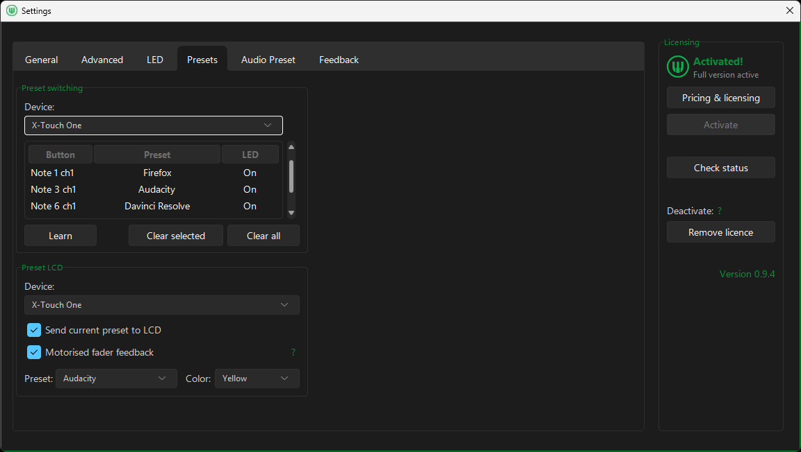

Browser & Windows
Control tabs, web playback, window commands, macros and application volume from one preset.
Map buttons, pads, knobs, faders, encoders and jog wheels to keyboard shortcuts, macros, Windows audio and app-specific actions.
 Main window · Volume Control preset
Main window · Volume Control preset



Move or press a control, then assign it a shortcut, macro, volume target, or other action.
Preset examples
Create presets for different apps and workflows, such as browsing, streaming, editing, media, or Windows audio.
Browser & Windows
Control tabs, web playback, window commands, macros and application volume from one preset.

Streaming
Combine shortcut-based recording controls with supported Windows input volume and mute mappings.
Read the OBS workflow guide
Video editing
Map transport, timeline navigation, markers, editing shortcuts and volume to physical controls.

Media control
Assign media controls such as play, pause, jump, fullscreen, mute, and app volume.
Windows audio
Map system volume, app volume, and supported input volume and mute controls.
See input volume and muteCreate a sequence of shortcuts, waits, mouse actions, text input, and program or file launches, then assign it to a MIDI control.
Explore MIDI macros for Windows
Build presets for different apps and workflows, then switch between them directly from your controller.
Use physical knobs or faders for system, application and supported input volume targets.
Explore volume controlTurn buttons and pads into global or app-targeted keyboard commands.
See shortcut setupCombine shortcuts, waits, mouse actions, text input and program or file launch without scripting.
Understand macrosRepurpose the same controls for browsers, streaming, editing, media and everyday desktop work.
Explore use casesTrigger samples, stop playback, and control the audio level from mapped MIDI controls. Requires a licence.
See sample controlsUse LED feedback, plus LCD and motorised-fader feedback on supported hardware.
Explore MCU setupIf your controller sends standard MIDI messages to Windows, you can usually map its buttons, pads, knobs, faders, encoders and jog wheels in MIDI Command Studio.
Use MIDI Command Studio free to test it with your own device.
Standard controls you can map
LED, display and motorised-fader feedback require compatible hardware.
Free version
The free version has no time limit and does not require an email sign-up. Connect your MIDI controller, create your own mappings and presets, and see how MIDI Command Studio works with your setup.
Free includes
A licence removes those limits, enables multiple active devices, and adds simple audio sample playback. $16.99 USD.
Reviews and listings